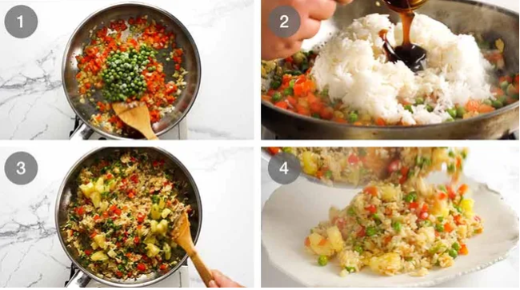

Home
Pineapple Fried Rice

Pineapple Fried Rice is of Thai origin, though there’s iterations of it all around the world. While some recipes use little more than a dash of soy sauce, this is a recipe that stays true to the Thai way and will evoke memories of warm balmy evenings in Thailand, eating at beach shack diners with your toes squidging in the sand, sipping on fruit cocktail
Here’s what you need to make Pineapple Fried Rice – the Thai way (the best way!). While it is of course best to make this with fresh pineapple when they’re ripe and at their prime, canned is perfectly acceptable (and a heck of a lot faster to prep!).
- Green Onion
- Rice
- Onion
- Garlic
- Oyster Sauce
- Fish Sauce
- Sugar
- Pineapple
- Peas
- Capsicum
3 Thai Sauce Options
-
Fish sauce + Oyster sauce
– truly authentic Thai, terrific caramelisation / depth of flavour. In fact, purists say it’s “illegal” to use soy sauce in Thai cooking. That if you do, it’s Chinese food not Thai!
-
Soy sauce + Oyster sauce
– typically thought of as Thai homestyle.
-
Soy sauce + Maggi seasoning*
- commonly used by Thai restaurants outside of Thailand.
How to make Pineapple Fried Rice
It’s nice and quick to make – everything is just fried up in a skillet or wok. Use a large one so you can toss enthusiastically because that’s the key to reducing the sauce down and making it almost “caramelise” the rice grains which = flavour!

After finishing serve it up and enjoy!
The following will server 6-8 people as a side
This is a Thai dish made with a classic Thai Fried Rice Sauce. Use ONE of the 3 sauces - all are traditional. Serve with all things Thai, Asian, BBQ, tropical themed, Caribbean (excellent match!), fish, prawns/shrimp, salmon - see in post for ideas. Also - featured in Monday's Honey Soy Chicken.
- 2 tbsp vegetable oil
- 2 garlic cloves, finely minced
- 1/2 onion, finely chopped
- 1/2 red capsicum / bell peppers, diced (- 3/4 cup)
- 1/2 cup peas, frozen
- 3 cups day old jasmine rice, cooked
- 1 1/2 cups pineapple pieces, fresh or canned drained
- 1/2 cup green onion, sliced
SAUCE OPTION 1 (BASE VERSION, RECOMMENDED):
- 1 tbsp oyster sauce
- 1 1/2 tbsp fish sauce
- 1/2 tsp sugar
Sauce Option 2:
- 1 tbsp oyster sauce
- 1 1/2 tbsp soy sauce, light or all purpose (not dark soy)
Sauce Option 3:
- 1 1/2 tbsp soy sauce
- 1 tbsp Thai Seasoning (Gold Mountain)
Instructions
- Heat oil in a wok or large non stick skillet over high heat.
- Add garlic and onion, cook for 1 minute.
- Add capsicum, cook for 1 minute.
- Add peas, stir for 30 seconds
- Add rice and Sauce ingredients of choice. Cook, stirring constantly, for 2 minutes or until rice grains goes from being wet with sauce to sort of caramelised.
- Add pineapple, stir for just 30 seconds to warm through.
- Stir through green onions then serve!